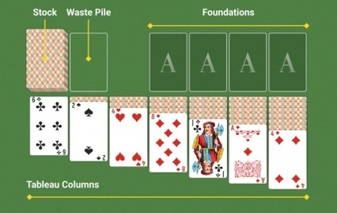

Klondike Instructions
History
Klondike Solitaire is the classic single-player card game most people think of when they hear “solitaire.” It originated during the California Klondike Gold Rush era in the 1890s. In some regions, particularly in the United Kingdom, it’s also known as “Patience.” Klondike is the most widely recognized version of solitaire worldwide.
Overview
The objective is to move all 52 cards to four Foundation piles, one for each suit, building each pile from Ace to King. To accomplish this, reveal and arrange cards in the Tableau and play available cards from the Stock and Waste. The game ends when all cards are on the Foundations or no legal moves remain.
Players
Klondike is a single-player game.
Cards
A standard 52-card deck. Cards can be moved by clicking on them or dragging and dropping them.
Autoplay is a feature that automatically moves eligible cards to the foundations. The Autoplay button toggles it On or Off. The default is On.
Setup
Deal 28 cards into seven Tableau columns from left to right. Place one card in the first column, two in the second, three in the third, and continue until the seventh column contains seven cards.
Turn the top card on each column face up, so that there are seven face-up cards.
Set the remaining 24 cards face down to form the Stock pile. Next to it, the Waste pile will hold cards face up turned from the Stock during play.

Foundations
As each ace becomes available, move it to one of the four Foundation piles above the Tableau. Build each Foundation with cards of the same suit in ascending order: Ace, 2 through 10, Jack, Queen, and King.
You may move a card from a Foundation back to the Tableau if the move follows the Tableau rule: descending rank and alternating color. You may also move eligible Tableau cards to the Foundations.
Note: If Autoplay is on and you need to move one or more cards from a Foundation, turn Autoplay off first. Move the card or cards to the Tableau, make the intended Tableau play, and then turn Autoplay back on.
The Tableau
Build Tableau columns in descending rank while alternating card colors. You may move a single face-up card or a face-up sequence that already follows this pattern onto a card of the next higher rank and opposite color.
Example: The 10 of hearts may be played on the Jack of clubs or the Jack of spades. The 5 of clubs may be played on the 6 of hearts or the 6 of diamonds.
Whenever a Tableau column has no face-up cards but still contains face-down cards, turn the top face-down card face up. That card is then available to move or to receive another legal Tableau card.
When a Tableau column is empty, only a visible king may fill the space. You may move the king by itself or with any correctly ordered face-up sequence beneath it. A king may come from another Tableau column or from the top of the Waste pile.
Gameplay
Turn cards from the Stock three at a time onto the face-up Waste pile. Only the top card of the Waste is available to play on a Foundation or the Tableau. After you play that card, the next uncovered Waste card becomes available.
When the Stock is empty, turn the Waste pile face down and return it to the Stock position without shuffling. Continue turning three cards at a time. You may recycle the Waste and go through the Stock multiple times.
Game Over
The game ends in one of two ways: you win when all 52 cards reach the four Foundation piles, or play stops when no legal moves remain.